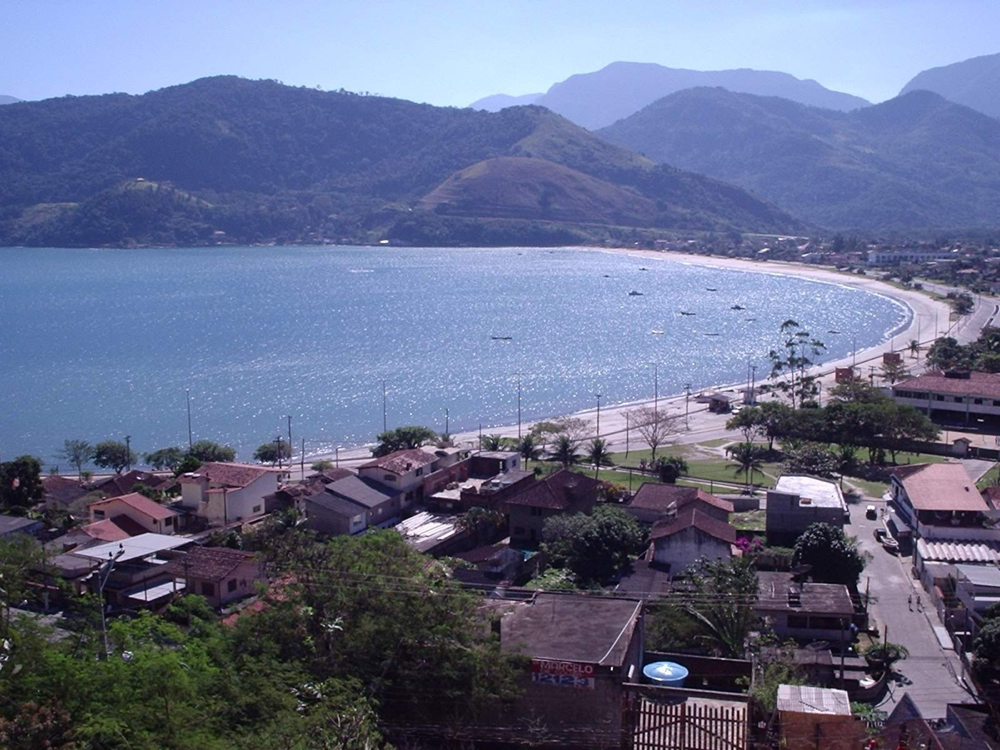
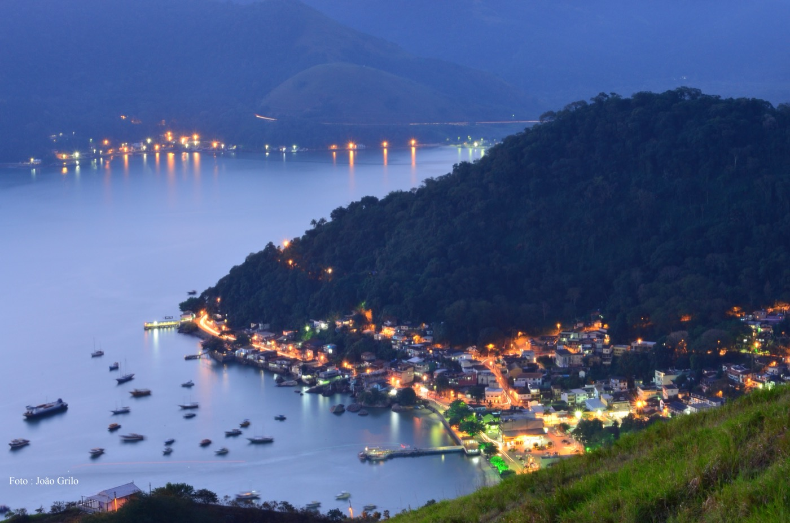

Se você está planejando conhecer Mangaratiba, agora há mais um motivo para chegar cedo: a cidade inaugurou o seu parque natural mais alto e panorâmico. A Pedra do Urubu virou o novo point da Costa Verde — e combina perfeitamente com um dia de barco pela região.
O que é o Parque Natural Municipal da Pedra do Urubu
Inaugurado em 6 de junho de 2026, o Parque Natural Municipal da Pedra do Urubu fica no 1º distrito de Mangaratiba, cercado pela Mata Atlântica. São aproximadamente 248 hectares de área protegida, com 11 nascentes e o mirante principal a cerca de 290 metros de altitude. É um parque público e de entrada gratuita, e o sucesso foi imediato: só no primeiro fim de semana de funcionamento, recebeu mais de 1.180 visitantes, segundo a Prefeitura.

A vista do mirante: três baías num só olhar
O grande cartão-postal é o Mirante da Pedra do Urubu. Do alto, a cerca de 290 metros, avistam-se as baías de Mangaratiba, Sepetiba e Ilha Grande de uma vez — uma das paisagens mais impressionantes da Costa Verde do Rio de Janeiro. É o tipo de vista que recompensa a subida e rende as melhores fotos da viagem.
O que você encontra lá em cima
- Mirante da Pedra do Urubu — vista panorâmica a cerca de 290 m de altitude.
- Trilha principal de aproximadamente 1 km, além de uma trilha sensorial.
- Tirolesa e parede de escalada para quem quer aventura.
- Borboletário, espaços instagramáveis e áreas de meditação e descanso.
- Centro de Visitantes Luiz Carlos Brojo, com recepção e informações sobre a fauna e a flora locais.
Onde fica e como chegar à Pedra do Urubu
O parque fica no 1º distrito de Mangaratiba, na área central do município, com acesso pela malha viária da cidade — que, por sua vez, é servida pela Rodovia Rio-Santos (BR-101), a mesma rota de quem vem do Rio de Janeiro. Como é um equipamento novo, vale confirmar os horários de visitação e as condições de acesso diretamente com a Prefeitura de Mangaratiba antes de subir, especialmente em dias de chuva, quando as trilhas podem ficar escorregadias.

Dica de quem conhece a região: reserve a manhã, leve água, calçado fechado e protetor solar. A subida é considerada leve, mas a recompensa lá em cima pede tempo para fotos e contemplação.
Terra e mar no mesmo dia: combine com um passeio de barco
Mangaratiba é o ponto de partida mais próximo do Rio para a Ilha Grande — e é daqui que saem a nossa travessia e os passeios de barco da Vou de Barco. Dá para montar um roteiro redondo: de manhã, a trilha e o mirante da Pedra do Urubu; à tarde, cair no mar pelas ilhas paradisíacas da região.
Veja como chegar e os horários da travessia de Mangaratiba para a Ilha Grande, conheça os passeios de barco saindo de Mangaratiba (Ilha da Guaíba, Pombeba e Jaguanum) e os passeios em Ilha Grande, ou fale com a gente no WhatsApp para montar o seu roteiro.
Terra e mar no mesmo dia: essa é a Mangaratiba que a gente ama mostrar.
Perguntas frequentes
Quanto custa visitar a Pedra do Urubu?
A entrada no Parque Natural Municipal da Pedra do Urubu é gratuita, conforme anunciado pela Prefeitura de Mangaratiba na inauguração.
Onde fica a Pedra do Urubu?
No 1º distrito de Mangaratiba, na área central do município, em meio à Mata Atlântica, na Costa Verde do Rio de Janeiro. O acesso à cidade é pela Rodovia Rio-Santos (BR-101).
Como é a trilha e quanto tempo leva?
A trilha principal tem cerca de 1 km e é considerada leve. Em ritmo tranquilo, costuma levar de 30 minutos a 1 hora até o mirante. Há também uma trilha sensorial e áreas de descanso e contemplação pelo caminho.
O que tem no Parque da Pedra do Urubu?
Mirante a cerca de 290 m de altitude, trilhas, tirolesa, parede de escalada, borboletário, espaços para fotos, áreas de meditação e o Centro de Visitantes Luiz Carlos Brojo. São aproximadamente 248 hectares protegidos, com 11 nascentes.
O que dá para ver do mirante?
Do alto, a cerca de 290 metros, avistam-se as baías de Mangaratiba, Sepetiba e Ilha Grande — considerada uma das vistas mais bonitas da Costa Verde.
Precisa agendar? Qual é o horário de funcionamento?
Na inauguração, a Prefeitura de Mangaratiba não divulgou horário fixo nem agendamento obrigatório. Por ser um parque novo, confirme os horários e as condições de acesso diretamente com a Prefeitura antes de ir, sobretudo em dias de chuva.
Dá para combinar a Pedra do Urubu com um passeio de barco?
Sim. Mangaratiba é o ponto de partida da travessia e dos passeios de barco da Vou de Barco para a Ilha Grande. Dá para fazer a trilha de manhã e curtir o mar à tarde, no mesmo dia.